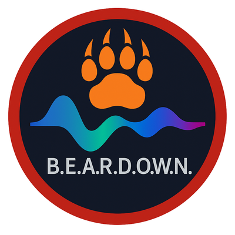
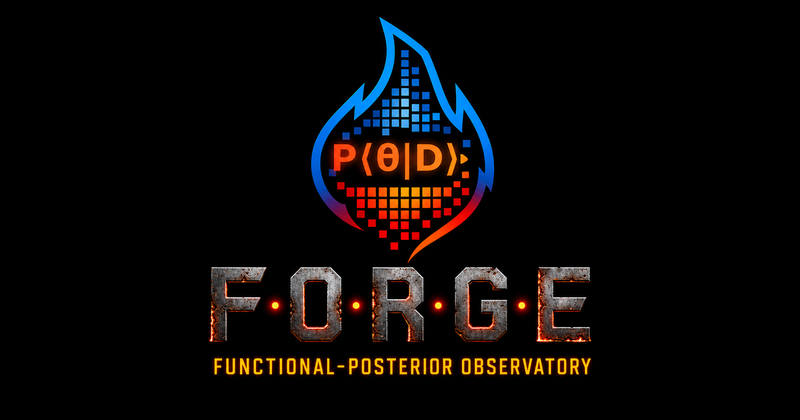
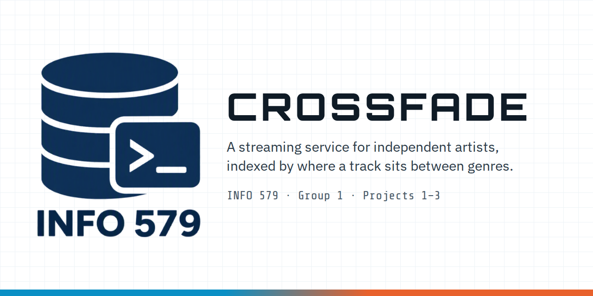

History · all projects
INFO 510 → INFO 698 → INFO 579
Where every part of CROSSFADE came from: the genre models behind the business, how the sample data was made and what in it is real, each deliverable and its revisions, and the scripts that check the work.

Fall 2025 · INFO 510BEARDOWN Final project: a Bayesian neural network that sorts GTZAN music clips into 10 genres from a spectrogram and 57 audio features.
2026 · INFO 698 capstoneFORGE A Bayesian posterior observatory. BEARDOWN was rebuilt there with a leakage-safe pipeline and grown into three model generations.
Fall 2026 · INFO 579CROSSFADE A streaming business built on those models, whose catalogue is indexed by where a track sits between genres.A genre classifier does not only name a genre: it gives a probability for each of the ten, and different versions of the model can disagree. CROSSFADE treats that spread as the product. Every upload is scored by several BEARDOWN versions, and listeners build stations from a target genre blend and an allowed range of ambiguity. The five model versions in the Project 1 data are the five bundles FORGE exported, described with their real properties (below). The business entities (artists, tracks, listeners, stations, plays) and the revenue model were designed new for INFO 579 in Project 1.
The same four links and social cards appear in the Project 1 requirements analysis (Overview). Every column is documented in the data dictionary.
beardown_3sec) swept and deployed; the family is complete at five exported bundles.STATUS_2026-06-23.mddatabase_implementation.sql, use cases, single_table.sql with its 66-test suite and an expected-failure query (UC-15).git 38f99cc … afb9d54Every BEARDOWN version has the same two branches: a small CNN (three convolution blocks, 32/64/128 filters) reads a greyscale mel spectrogram, and an MLP reads 57 tabular audio features. The two are fused and passed to a classifier head over the 10 GTZAN genres. The versions differ in how the branches are fused, how wide the shared embedding is, and whether a track is read as one 30-second clip or as ten 3-second segments. They are not one architecture with tuned settings.
| Bundle | Fusion | Embedding | Segment | CV accuracy | Validation | Test | In data.xlsx |
|---|---|---|---|---|---|---|---|
| beardown | gated | 512 | 30 s | 0.686 ± 0.011 | 0.747 | 0.700 | Model 1 |
| beardown_rrm_cfg12 | gated | 384 | 30 s | 0.716 ± 0.007 | 0.707 | 0.680 | Model 2 · fusion recorded as concat (see below) |
| beardown_rrm_cfg17 | concat | 768 | 30 s | 0.769 ± 0.004 | 0.793 | 0.760 | Model 3 |
| beardown_rrm | concat | 768 | 30 s | 0.769 ± 0.004 | 0.793 | 0.760 | Model 4 · the deployed copy of cfg17 |
| beardown_3sec | concat | 384 | 3 s | 0.777 ± 0.009 | 0.776 | 0.789* | Model 5 |
Read from each bundle's arch.json and metrics.json. Accuracies are over 3 cross-validation folds, then a
held-out validation and test split (70/15/15, stratified by genre). *Per 3-second segment (1,500 segments, 150 tracks); a majority vote of each
track's segments gives 0.807 per track, the figure comparable with the 30-second models (vote_eval.json). The leakage audit is why
every split is made on whole tracks: in the 3-second table a track becomes about ten near-identical segments, and a segment shuffle lets a model
recognise the song rather than the genre.
data.csv and one CSV per table, then compares every cell back against the workbook. No rounding.INSERT per table, parents first (the Unit 5 pattern).data.csv, independently of the SQL.| Table | Origin | Detail |
|---|---|---|
| genre | real | The 10 GTZAN genre labels with IDs 0–9, in the models' label order. The one-line descriptions were written for CROSSFADE. |
| scoring_model | realscenario | Version label, fusion type, embedding dimension, segment length, training corpus and holdout (test) accuracy come from the five exported bundles. Deployed On dates belong to the business scenario. |
| artist · track · listener · station · play | invented | Fictional artists, titles, listeners, stations and listening history, written for the scenario or drawn by the seeded generator. |
| genre_probability | generated | Each track has a hand-set genre blend (for example 58% jazz, 30% hip-hop). Each model's ten probabilities are drawn from a Dirichlet distribution centred on that blend, sharper for the stronger models. They are not outputs of the real models. |
| track_score | computed | Top genre, top probability, posterior entropy and model divergence are calculated from the stored probability rows, so they always agree. One row (track 4817 × beardown_3sec) is pinned to the worked example in the requirements analysis. |
| station_blend | invented | Each station's target blend, one row per genre, written for the scenario. |
| Project | File | Status | History |
|---|---|---|---|
| P1 | requirements_analysis.pdf | submitted | Revised to mk16 (23 pages). After the instructor's feedback that associative-table keys must be built from the foreign keys, surrogate keys were removed for composite keys: Track Score = Track + Model; Play = Listener + Track + Played At; Station Blend = Station + Genre. |
| P1 | conceptual_data_model.png | submitted | Drawn by Nidhi Pabari (mk8); a script-drawn draft is kept in project1/source/conceptual_model/. |
| P1 | data.xlsx | submitted | mk6, from gen_data.py. Unchanged since; Project 2 loads it as handed in. |
| P1 | physical_data_model.png | submitted | mk15, reverse-engineered in Workbench from the generated schema; the earlier draft is kept as “mk1 draft” with what it missed. |
| P2 | database_implementation.sql | done | Schema with named constraints and the 401 sample rows; checked by check_implementation.py. |
| P2 | single_table.sql | done | Seven single-table queries tied to Project 1 use cases, plus one expected to fail (a duplicate upload, error 1062). 67 tests. |
| P2 | multiple_table.sql | in progress | Joins, a set operation, a subquery and a WITH query. |
| P2 | routines.sql | in progress | Stored procedures and functions, with an error handler for duplicate keys. |
| P3 | – | not started | NoSQL version of the same business, due Dec 13. |
The full Project 1 revision log (mk1 to mk16) is on the Project 1 change log.
| Tool | What it does |
|---|---|
| MySQL 8.4 · Workbench 8.0 | Run the deliverables; Workbench drew the physical model. |
| project1/scripts/check_consistency.py | Cross-checks every column across the requirements analysis, data.xlsx and the data dictionary. |
| tools/export_p1_data.py | Exports data.xlsx to CSV and verifies the export cell for cell. |
| project2/scripts/check_implementation.py | Loads database_implementation.sql twice and compares all 10 tables with the exports. |
| project2/scripts/build_usecases.py | Builds the use-case page; fails if a quoted requirement is not word for word in the requirements analysis, or a listed column is not in the schema. |
| project2/tests/ (pytest) | Runs each query file against a fresh database and compares results with an independent Python oracle; checks that the expected-failure query fails with the right error and leaves the data unchanged. |
| tools/stamp_assets.py | Stamps the shared CSS and JS links with a content hash so browsers do not show a stale page after a push. |
Claude (Anthropic) helped write the site, the build scripts and the test scaffolding. Its output goes through the same checks as everything else: the data comparisons and test suites above, and a local run of every deliverable in MySQL before submission.
data.xlsx records beardown_rrm_cfg12 as concat; its arch.json says gated.
The generator notes the value was assumed because it was not recorded at the time. data.xlsx is the graded file, so Project 2 loads it as
handed in; the correct value is gated.
data.xlsx stores 0.7887 for beardown_3sec, which is accuracy per 3-second segment. Per
track it is 0.8067. The other four models are scored per track.
models/<bundle>/arch.json, metrics.json, models/beardown_3sec/vote_eval.json, after/leakage.json, STATUS_2026-06-23.md, DATA_PIPELINE.md.project1/source/data/gen_data.py, project1/CHANGES.md, the requirements analysis, the git history and the scripts named above.CROSSFADE · INFO 579 Group 1 · Herling, Nathan · Pabari, Nidhi Nilesh